Unexpected Climate Changes, Non-Linear Tipping Points & Feedback Loops
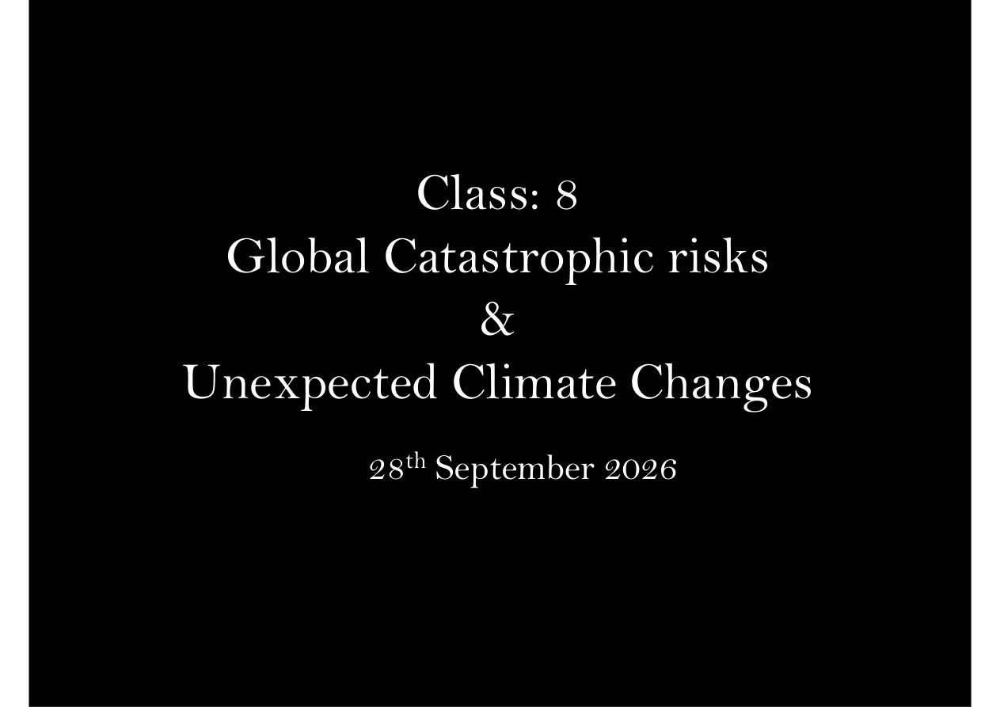
Class: 8
- •Class: 8 Global Catastrophic risks Unexpected Climate Changes 28th September 2026
This slide presents essential concepts in Lecture 08: Class: 8. Specifically, it examines Class: 8 Global Catastrophic risks Unexpected Climate Changes 28th September 2026. In the broader context of Unexpected climate changes and tipping points: Arctic sea ice melt, West Antarctic ice sheet disintegration, Amazon rainforest dieback, Nassim Taleb's Black Swan theory, Eric Drexler's molecular nanotechnology risks (Grey Goo), Bulletin of the Atomic Scientists Doomsday Clock (90 seconds to midnight), Global Terrestrial Stilling, Hypercanes (50 deg C ocean SST), ocean darkening, Chinchorro mummy decay, and athletic wet-bulb heat safety rules., mastering this material is critical for analyzing ecological tradeoffs, regulatory frameworks, and exam questions on environmental system dynamics.
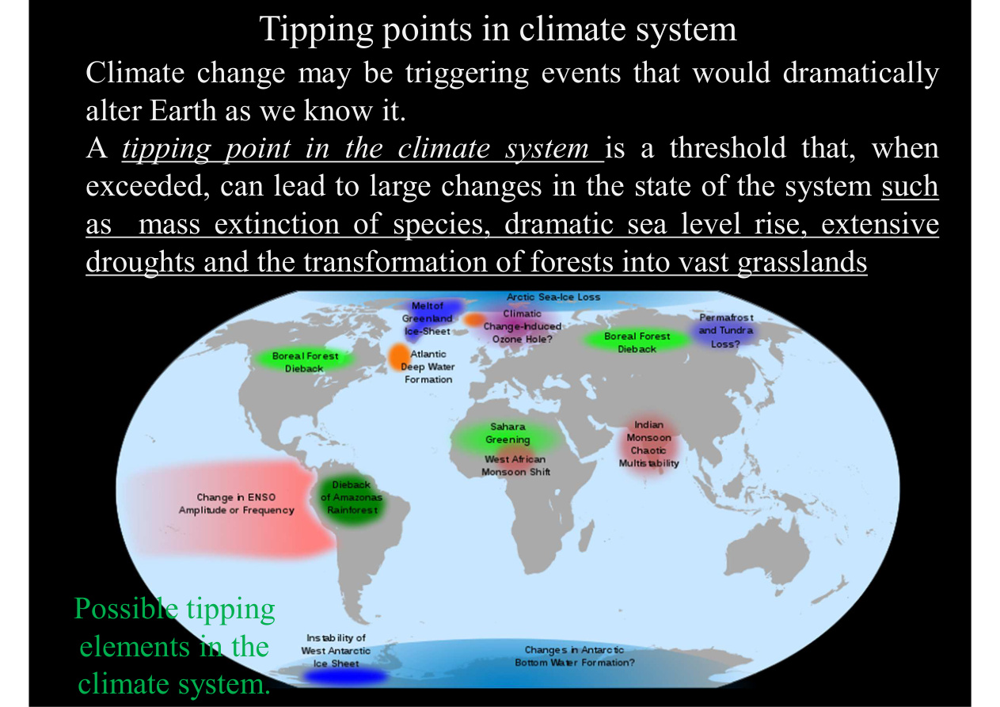
Tipping points in climate system
- •Tipping points in climate system Climate change may be triggering events that would dramatically alter Earth as we know it. A tipping point in the climate system is a threshold that, when
This slide presents essential concepts in Lecture 08: Tipping points in climate system. Specifically, it examines Tipping points in climate system Climate change may be triggering events that would dramatically alter Earth as we know it. A tipping point in the climate system is a threshold that, when. In the broader context of Unexpected climate changes and tipping points: Arctic sea ice melt, West Antarctic ice sheet disintegration, Amazon rainforest dieback, Nassim Taleb's Black Swan theory, Eric Drexler's molecular nanotechnology risks (Grey Goo), Bulletin of the Atomic Scientists Doomsday Clock (90 seconds to midnight), Global Terrestrial Stilling, Hypercanes (50 deg C ocean SST), ocean darkening, Chinchorro mummy decay, and athletic wet-bulb heat safety rules., mastering this material is critical for analyzing ecological tradeoffs, regulatory frameworks, and exam questions on environmental system dynamics.
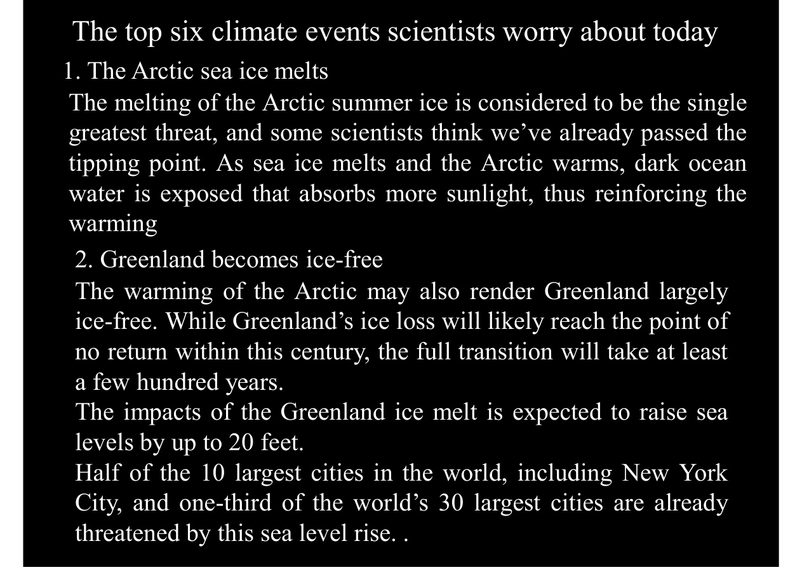
The top six climate events scientists worry about today
- •The top six climate events scientists worry about today 1. The Arctic sea ice melts The melting of the Arctic summer ice is considered to be the single greatest threat, and some scientists think we’ve already passed the
This slide presents essential concepts in Lecture 08: The top six climate events scientists worry about today. Specifically, it examines The top six climate events scientists worry about today 1. The Arctic sea ice melts The melting of the Arctic summer ice is considered to be the single greatest threat, and some scientists think we’ve already passed the. In the broader context of Unexpected climate changes and tipping points: Arctic sea ice melt, West Antarctic ice sheet disintegration, Amazon rainforest dieback, Nassim Taleb's Black Swan theory, Eric Drexler's molecular nanotechnology risks (Grey Goo), Bulletin of the Atomic Scientists Doomsday Clock (90 seconds to midnight), Global Terrestrial Stilling, Hypercanes (50 deg C ocean SST), ocean darkening, Chinchorro mummy decay, and athletic wet-bulb heat safety rules., mastering this material is critical for analyzing ecological tradeoffs, regulatory frameworks, and exam questions on environmental system dynamics.
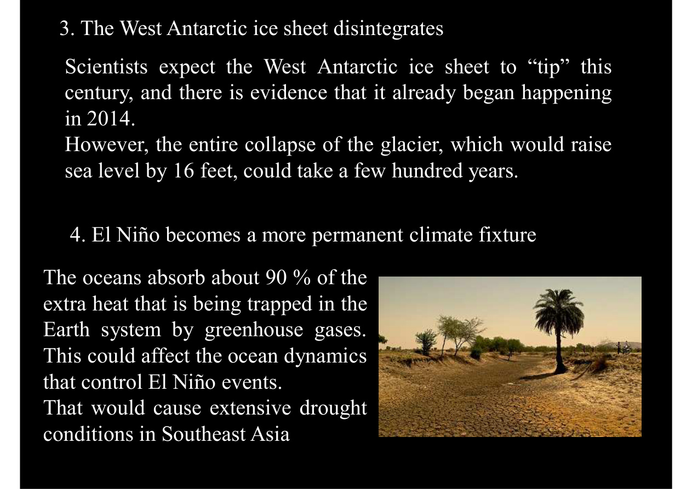
3. The West Antarctic ice sheet disintegrates
- •3. The West Antarctic ice sheet disintegrates Scientists expect the West Antarctic ice sheet to “tip” this century, and there is evidence that it already began happening in 2014.
This slide presents essential concepts in Lecture 08: 3. The West Antarctic ice sheet disintegrates. Specifically, it examines 3. The West Antarctic ice sheet disintegrates Scientists expect the West Antarctic ice sheet to “tip” this century, and there is evidence that it already began happening in 2014.. In the broader context of Unexpected climate changes and tipping points: Arctic sea ice melt, West Antarctic ice sheet disintegration, Amazon rainforest dieback, Nassim Taleb's Black Swan theory, Eric Drexler's molecular nanotechnology risks (Grey Goo), Bulletin of the Atomic Scientists Doomsday Clock (90 seconds to midnight), Global Terrestrial Stilling, Hypercanes (50 deg C ocean SST), ocean darkening, Chinchorro mummy decay, and athletic wet-bulb heat safety rules., mastering this material is critical for analyzing ecological tradeoffs, regulatory frameworks, and exam questions on environmental system dynamics.
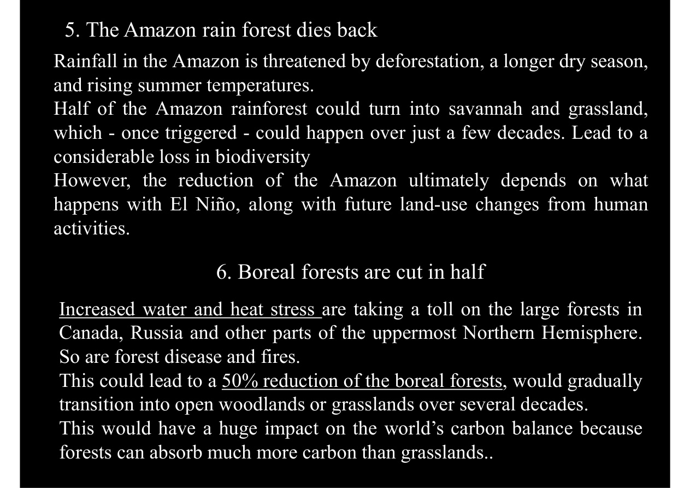
5. The Amazon rain forest dies back
- •5. The Amazon rain forest dies back Rainfall in the Amazon is threatened by deforestation, a longer dry season, and rising summer temperatures. Half of the Amazon rainforest could turn into savannah and grassland,
This slide presents essential concepts in Lecture 08: 5. The Amazon rain forest dies back. Specifically, it examines 5. The Amazon rain forest dies back Rainfall in the Amazon is threatened by deforestation, a longer dry season, and rising summer temperatures. Half of the Amazon rainforest could turn into savannah and grassland,. In the broader context of Unexpected climate changes and tipping points: Arctic sea ice melt, West Antarctic ice sheet disintegration, Amazon rainforest dieback, Nassim Taleb's Black Swan theory, Eric Drexler's molecular nanotechnology risks (Grey Goo), Bulletin of the Atomic Scientists Doomsday Clock (90 seconds to midnight), Global Terrestrial Stilling, Hypercanes (50 deg C ocean SST), ocean darkening, Chinchorro mummy decay, and athletic wet-bulb heat safety rules., mastering this material is critical for analyzing ecological tradeoffs, regulatory frameworks, and exam questions on environmental system dynamics.
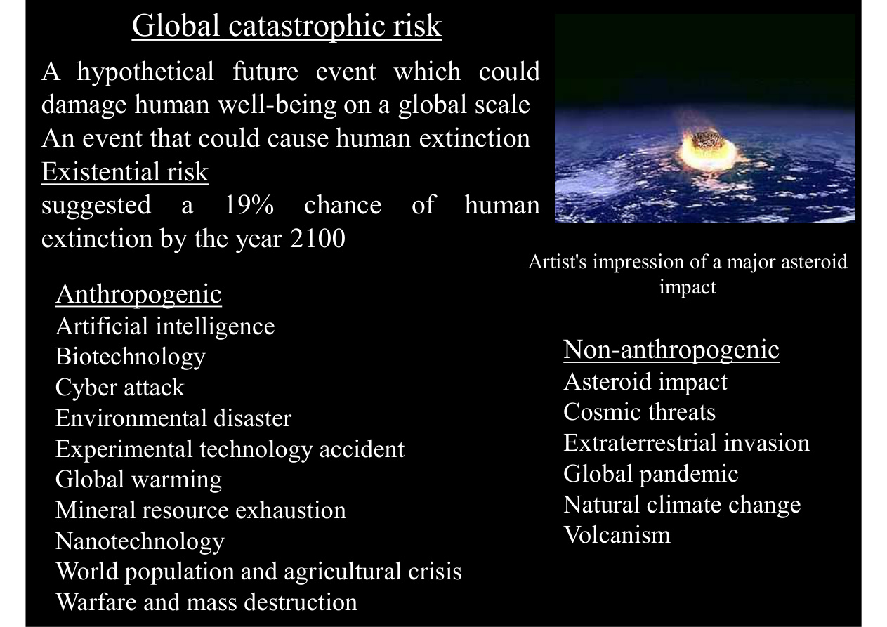
Global catastrophic risk
- •Global catastrophic risk A hypothetical future event which could damage human well-being on a global scale An event that could cause human extinction
This slide presents essential concepts in Lecture 08: Global catastrophic risk. Specifically, it examines Global catastrophic risk A hypothetical future event which could damage human well-being on a global scale An event that could cause human extinction. In the broader context of Unexpected climate changes and tipping points: Arctic sea ice melt, West Antarctic ice sheet disintegration, Amazon rainforest dieback, Nassim Taleb's Black Swan theory, Eric Drexler's molecular nanotechnology risks (Grey Goo), Bulletin of the Atomic Scientists Doomsday Clock (90 seconds to midnight), Global Terrestrial Stilling, Hypercanes (50 deg C ocean SST), ocean darkening, Chinchorro mummy decay, and athletic wet-bulb heat safety rules., mastering this material is critical for analyzing ecological tradeoffs, regulatory frameworks, and exam questions on environmental system dynamics.
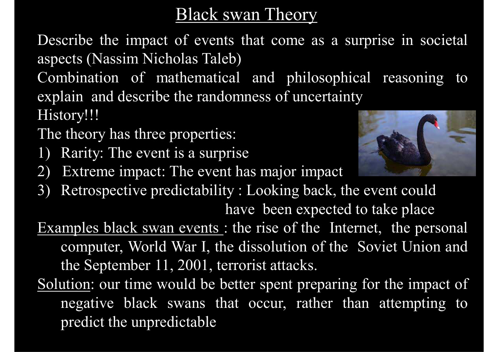
Black swan Theory
- •Black swan Theory Describe the impact of events that come as a surprise in societal aspects (Nassim Nicholas Taleb) Combination of mathematical and philosophical reasoning to
This slide presents essential concepts in Lecture 08: Black swan Theory. Specifically, it examines Black swan Theory Describe the impact of events that come as a surprise in societal aspects (Nassim Nicholas Taleb) Combination of mathematical and philosophical reasoning to. In the broader context of Unexpected climate changes and tipping points: Arctic sea ice melt, West Antarctic ice sheet disintegration, Amazon rainforest dieback, Nassim Taleb's Black Swan theory, Eric Drexler's molecular nanotechnology risks (Grey Goo), Bulletin of the Atomic Scientists Doomsday Clock (90 seconds to midnight), Global Terrestrial Stilling, Hypercanes (50 deg C ocean SST), ocean darkening, Chinchorro mummy decay, and athletic wet-bulb heat safety rules., mastering this material is critical for analyzing ecological tradeoffs, regulatory frameworks, and exam questions on environmental system dynamics.
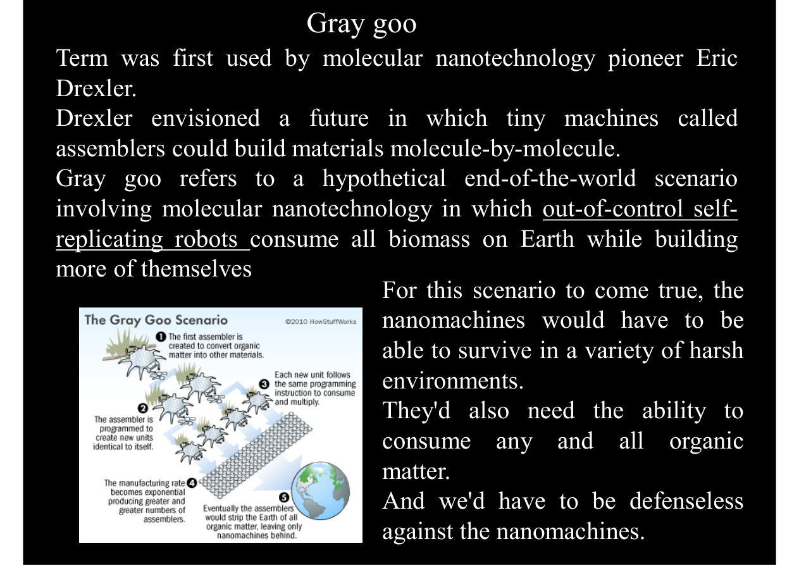
Term was first used by molecular nanotechnology pioneer Eric
- •Term was first used by molecular nanotechnology pioneer Eric Drexler. Drexler envisioned a future in which tiny machines called assemblers could build materials molecule-by-molecule.
This slide presents essential concepts in Lecture 08: Term was first used by molecular nanotechnology pioneer Eric. Specifically, it examines Term was first used by molecular nanotechnology pioneer Eric Drexler. Drexler envisioned a future in which tiny machines called assemblers could build materials molecule-by-molecule.. In the broader context of Unexpected climate changes and tipping points: Arctic sea ice melt, West Antarctic ice sheet disintegration, Amazon rainforest dieback, Nassim Taleb's Black Swan theory, Eric Drexler's molecular nanotechnology risks (Grey Goo), Bulletin of the Atomic Scientists Doomsday Clock (90 seconds to midnight), Global Terrestrial Stilling, Hypercanes (50 deg C ocean SST), ocean darkening, Chinchorro mummy decay, and athletic wet-bulb heat safety rules., mastering this material is critical for analyzing ecological tradeoffs, regulatory frameworks, and exam questions on environmental system dynamics.
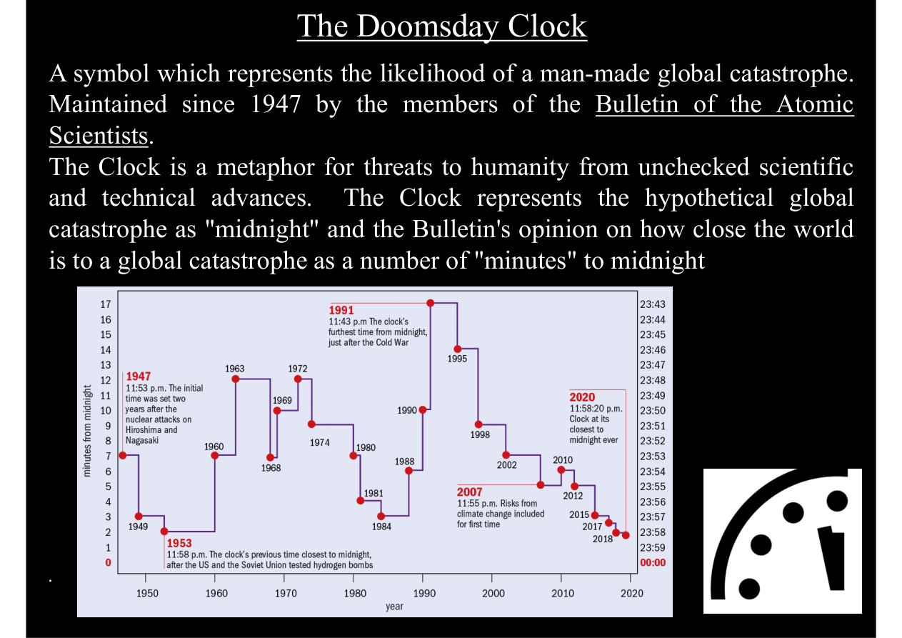
The Doomsday Clock
- •The Doomsday Clock A symbol which represents the likelihood of a man-made global catastrophe. Maintained since 1947 by the members of the Bulletin of the Atomic Scientists.
This slide presents essential concepts in Lecture 08: The Doomsday Clock. Specifically, it examines The Doomsday Clock A symbol which represents the likelihood of a man-made global catastrophe. Maintained since 1947 by the members of the Bulletin of the Atomic Scientists.. In the broader context of Unexpected climate changes and tipping points: Arctic sea ice melt, West Antarctic ice sheet disintegration, Amazon rainforest dieback, Nassim Taleb's Black Swan theory, Eric Drexler's molecular nanotechnology risks (Grey Goo), Bulletin of the Atomic Scientists Doomsday Clock (90 seconds to midnight), Global Terrestrial Stilling, Hypercanes (50 deg C ocean SST), ocean darkening, Chinchorro mummy decay, and athletic wet-bulb heat safety rules., mastering this material is critical for analyzing ecological tradeoffs, regulatory frameworks, and exam questions on environmental system dynamics.
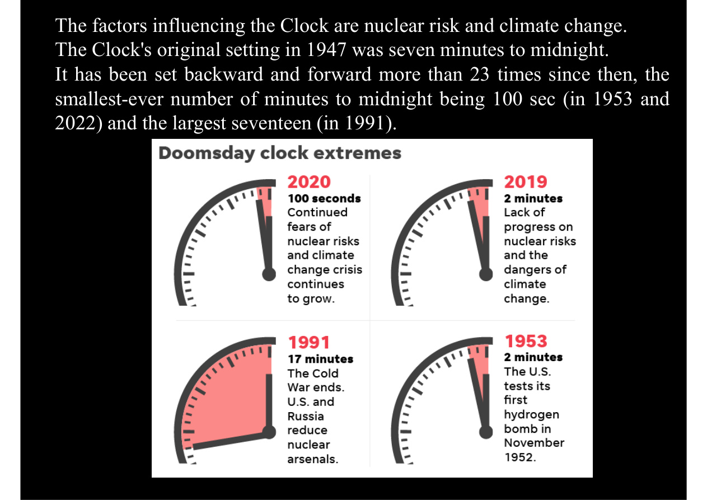
The factors influencing the Clock are nuclear risk and climate...
- •The factors influencing the Clock are nuclear risk and climate change. The Clock's original setting in 1947 was seven minutes to midnight. It has been set backward and forward more than 23 times since then, the smallest-ever number of minutes to midnight being 100 sec (in 1953 and
This slide presents essential concepts in Lecture 08: The factors influencing the Clock are nuclear risk and climate.... Specifically, it examines The factors influencing the Clock are nuclear risk and climate change. The Clock's original setting in 1947 was seven minutes to midnight. It has been set backward and forward more than 23 times since then, the smallest-ever number of minutes to midnight being 100 sec (in 1953 and. In the broader context of Unexpected climate changes and tipping points: Arctic sea ice melt, West Antarctic ice sheet disintegration, Amazon rainforest dieback, Nassim Taleb's Black Swan theory, Eric Drexler's molecular nanotechnology risks (Grey Goo), Bulletin of the Atomic Scientists Doomsday Clock (90 seconds to midnight), Global Terrestrial Stilling, Hypercanes (50 deg C ocean SST), ocean darkening, Chinchorro mummy decay, and athletic wet-bulb heat safety rules., mastering this material is critical for analyzing ecological tradeoffs, regulatory frameworks, and exam questions on environmental system dynamics.
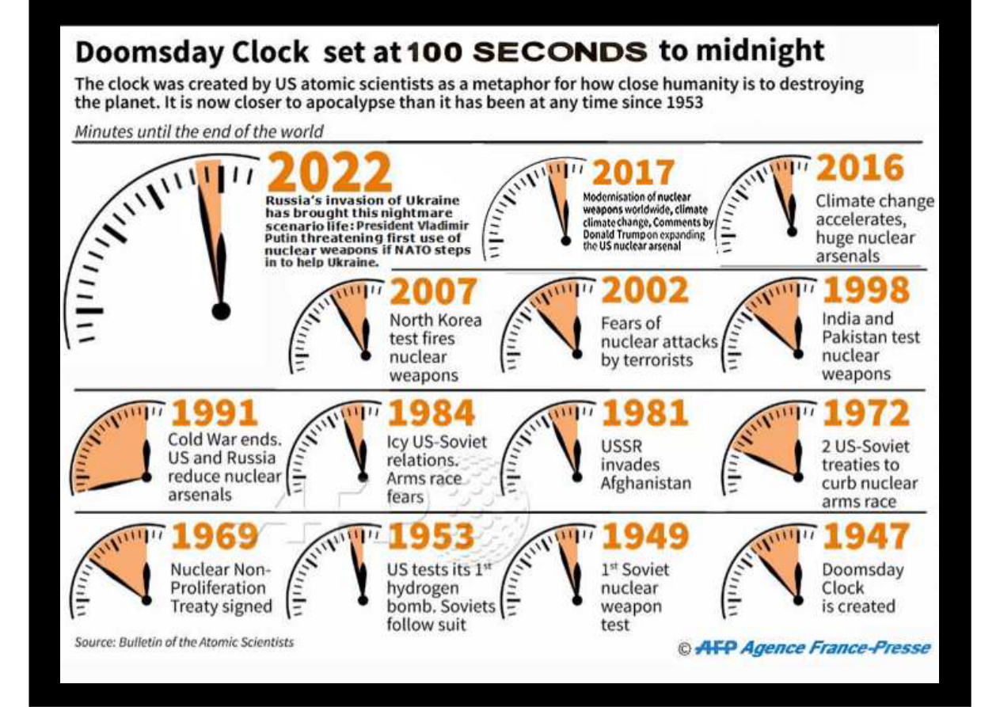
Slide 11
Visual figure / diagram presentation slide. Review the high-resolution render on the left.
This visual slide in Lecture 08 illustrates core structural mechanisms and empirical data for Slide 11. It provides essential visual context within the curriculum of Unexpected climate changes and tipping points: Arctic sea ice melt, West Antarctic ice sheet disintegration, Amazon rainforest dieback, Nassim Taleb's Black Swan theory, Eric Drexler's molecular nanotechnology risks (Grey Goo), Bulletin of the Atomic Scientists Doomsday Clock (90 seconds to midnight), Global Terrestrial Stilling, Hypercanes (50 deg C ocean SST), ocean darkening, Chinchorro mummy decay, and athletic wet-bulb heat safety rules., directly connecting theoretical principles with real-world environmental technology observations.
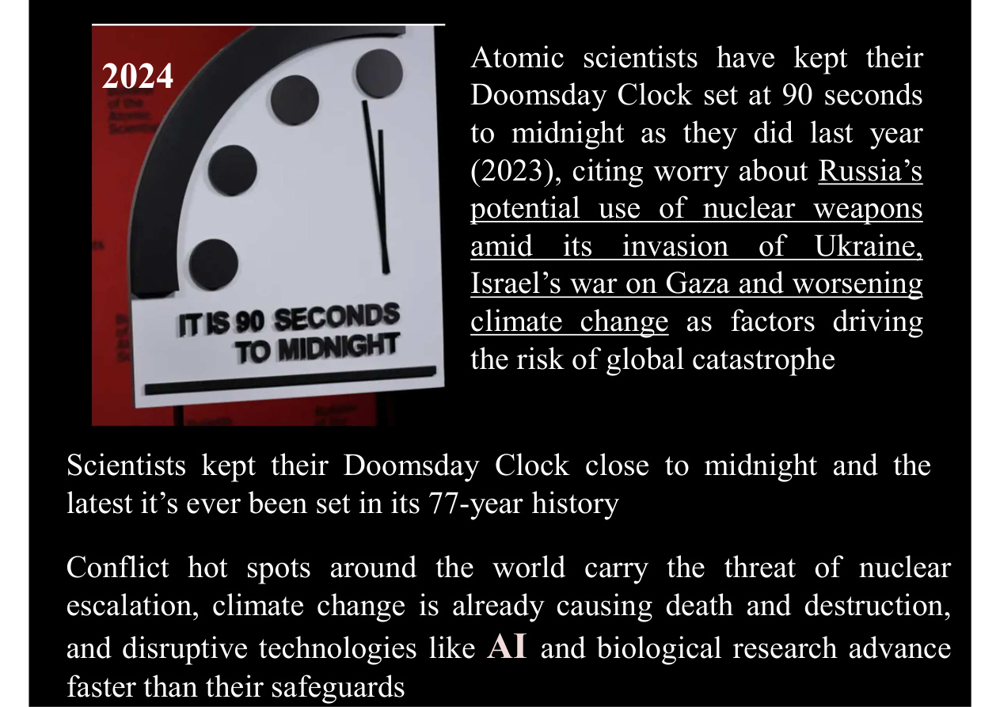
Atomic scientists have kept their
- •Atomic scientists have kept their Doomsday Clock set at 90 seconds to midnight as they did last year (2023), citing worry about Russia’s
This slide presents essential concepts in Lecture 08: Atomic scientists have kept their. Specifically, it examines Atomic scientists have kept their Doomsday Clock set at 90 seconds to midnight as they did last year (2023), citing worry about Russia’s. In the broader context of Unexpected climate changes and tipping points: Arctic sea ice melt, West Antarctic ice sheet disintegration, Amazon rainforest dieback, Nassim Taleb's Black Swan theory, Eric Drexler's molecular nanotechnology risks (Grey Goo), Bulletin of the Atomic Scientists Doomsday Clock (90 seconds to midnight), Global Terrestrial Stilling, Hypercanes (50 deg C ocean SST), ocean darkening, Chinchorro mummy decay, and athletic wet-bulb heat safety rules., mastering this material is critical for analyzing ecological tradeoffs, regulatory frameworks, and exam questions on environmental system dynamics.
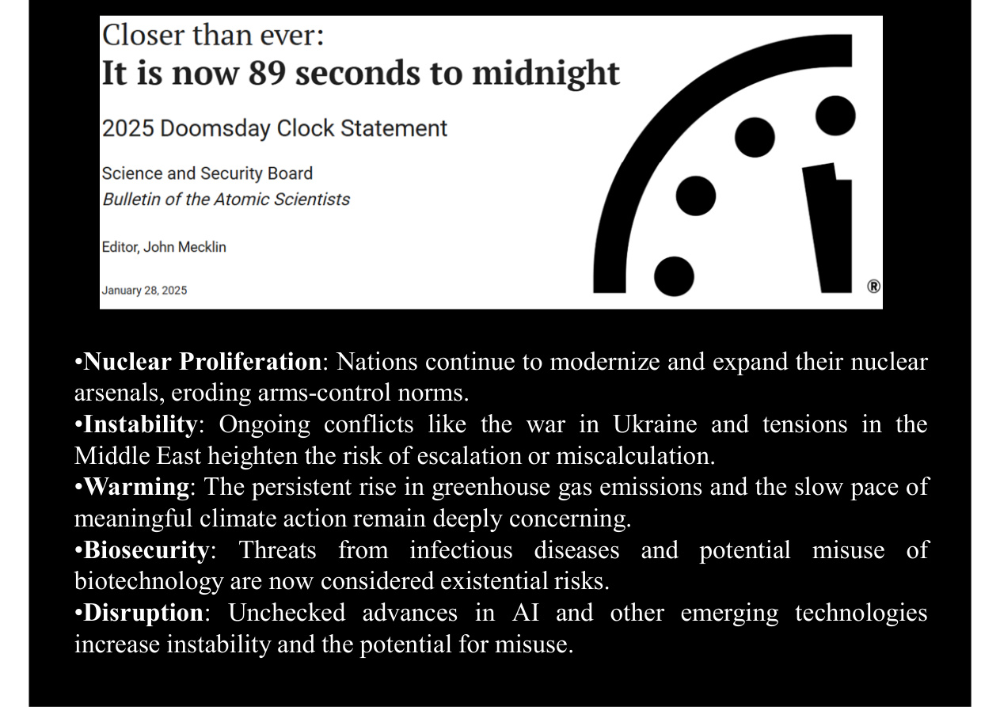
•Nuclear Proliferation: Nations continue to modernize and expa...
- ••Nuclear Proliferation: Nations continue to modernize and expand their nuclear arsenals, eroding arms-control norms. •Instability: Ongoing conflicts like the war in Ukraine and tensions in the Middle East heighten the risk of escalation or miscalculation.
This slide presents essential concepts in Lecture 08: •Nuclear Proliferation: Nations continue to modernize and expa.... Specifically, it examines •Nuclear Proliferation: Nations continue to modernize and expand their nuclear arsenals, eroding arms-control norms. •Instability: Ongoing conflicts like the war in Ukraine and tensions in the Middle East heighten the risk of escalation or miscalculation.. In the broader context of Unexpected climate changes and tipping points: Arctic sea ice melt, West Antarctic ice sheet disintegration, Amazon rainforest dieback, Nassim Taleb's Black Swan theory, Eric Drexler's molecular nanotechnology risks (Grey Goo), Bulletin of the Atomic Scientists Doomsday Clock (90 seconds to midnight), Global Terrestrial Stilling, Hypercanes (50 deg C ocean SST), ocean darkening, Chinchorro mummy decay, and athletic wet-bulb heat safety rules., mastering this material is critical for analyzing ecological tradeoffs, regulatory frameworks, and exam questions on environmental system dynamics.
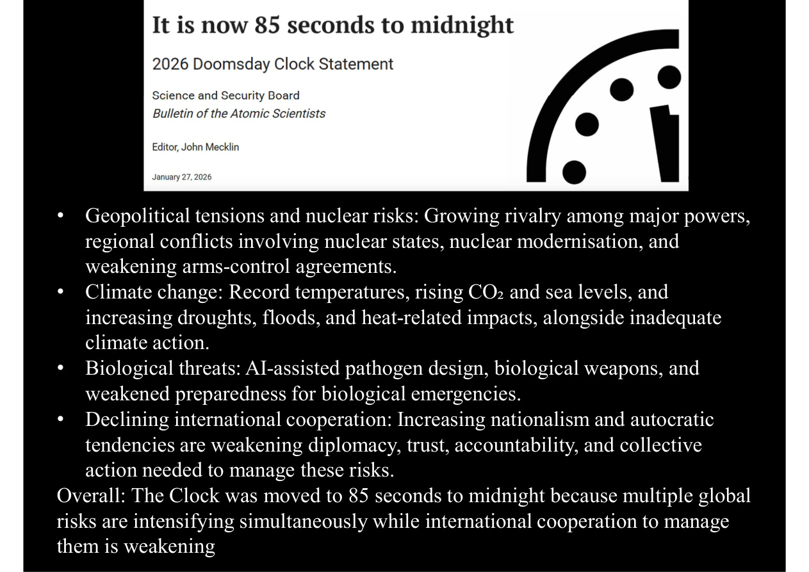
Geopolitical tensions and nuclear risks: Growing rivalry among...
- •Geopolitical tensions and nuclear risks: Growing rivalry among major powers, regional conflicts involving nuclear states, nuclear modernisation, and weakening arms-control agreements. Climate change: Record temperatures, rising CO₂ and sea levels, and
This slide presents essential concepts in Lecture 08: Geopolitical tensions and nuclear risks: Growing rivalry among.... Specifically, it examines Geopolitical tensions and nuclear risks: Growing rivalry among major powers, regional conflicts involving nuclear states, nuclear modernisation, and weakening arms-control agreements. Climate change: Record temperatures, rising CO₂ and sea levels, and. In the broader context of Unexpected climate changes and tipping points: Arctic sea ice melt, West Antarctic ice sheet disintegration, Amazon rainforest dieback, Nassim Taleb's Black Swan theory, Eric Drexler's molecular nanotechnology risks (Grey Goo), Bulletin of the Atomic Scientists Doomsday Clock (90 seconds to midnight), Global Terrestrial Stilling, Hypercanes (50 deg C ocean SST), ocean darkening, Chinchorro mummy decay, and athletic wet-bulb heat safety rules., mastering this material is critical for analyzing ecological tradeoffs, regulatory frameworks, and exam questions on environmental system dynamics.
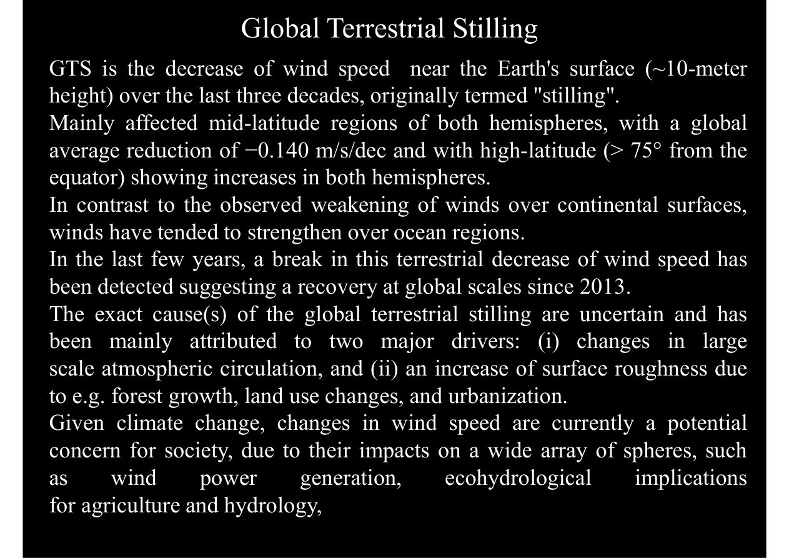
Global Terrestrial Stilling
- •Global Terrestrial Stilling GTS is the decrease of wind speed near the Earth's surface (~10-meter height) over the last three decades, originally termed "stilling".
This slide presents essential concepts in Lecture 08: Global Terrestrial Stilling. Specifically, it examines Global Terrestrial Stilling GTS is the decrease of wind speed near the Earth's surface (~10-meter height) over the last three decades, originally termed "stilling".. In the broader context of Unexpected climate changes and tipping points: Arctic sea ice melt, West Antarctic ice sheet disintegration, Amazon rainforest dieback, Nassim Taleb's Black Swan theory, Eric Drexler's molecular nanotechnology risks (Grey Goo), Bulletin of the Atomic Scientists Doomsday Clock (90 seconds to midnight), Global Terrestrial Stilling, Hypercanes (50 deg C ocean SST), ocean darkening, Chinchorro mummy decay, and athletic wet-bulb heat safety rules., mastering this material is critical for analyzing ecological tradeoffs, regulatory frameworks, and exam questions on environmental system dynamics.
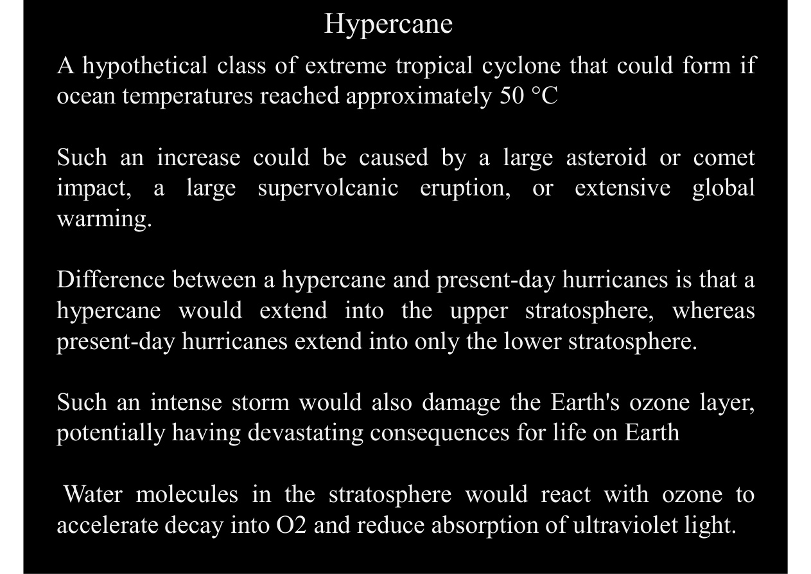
Hypercane
- •Hypercane A hypothetical class of extreme tropical cyclone that could form if ocean temperatures reached approximately 50 °C Such an increase could be caused by a large asteroid or comet
This slide presents essential concepts in Lecture 08: Hypercane. Specifically, it examines Hypercane A hypothetical class of extreme tropical cyclone that could form if ocean temperatures reached approximately 50 °C Such an increase could be caused by a large asteroid or comet. In the broader context of Unexpected climate changes and tipping points: Arctic sea ice melt, West Antarctic ice sheet disintegration, Amazon rainforest dieback, Nassim Taleb's Black Swan theory, Eric Drexler's molecular nanotechnology risks (Grey Goo), Bulletin of the Atomic Scientists Doomsday Clock (90 seconds to midnight), Global Terrestrial Stilling, Hypercanes (50 deg C ocean SST), ocean darkening, Chinchorro mummy decay, and athletic wet-bulb heat safety rules., mastering this material is critical for analyzing ecological tradeoffs, regulatory frameworks, and exam questions on environmental system dynamics.
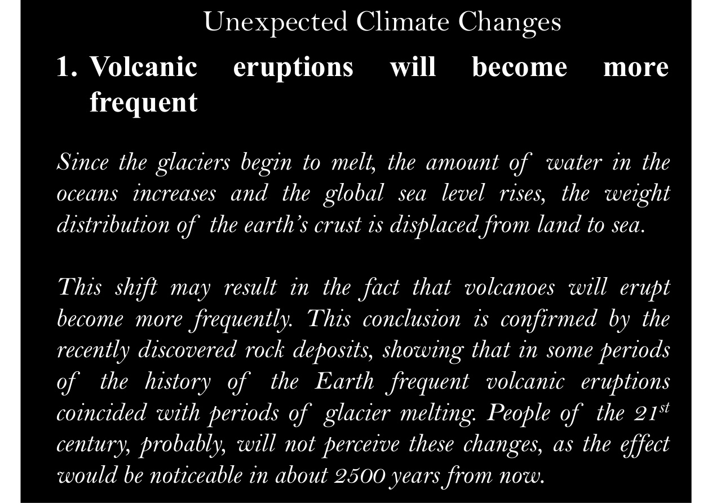
1. Volcanic
- •1. Volcanic eruptions will become
This slide presents essential concepts in Lecture 08: 1. Volcanic. Specifically, it examines 1. Volcanic eruptions will become. In the broader context of Unexpected climate changes and tipping points: Arctic sea ice melt, West Antarctic ice sheet disintegration, Amazon rainforest dieback, Nassim Taleb's Black Swan theory, Eric Drexler's molecular nanotechnology risks (Grey Goo), Bulletin of the Atomic Scientists Doomsday Clock (90 seconds to midnight), Global Terrestrial Stilling, Hypercanes (50 deg C ocean SST), ocean darkening, Chinchorro mummy decay, and athletic wet-bulb heat safety rules., mastering this material is critical for analyzing ecological tradeoffs, regulatory frameworks, and exam questions on environmental system dynamics.
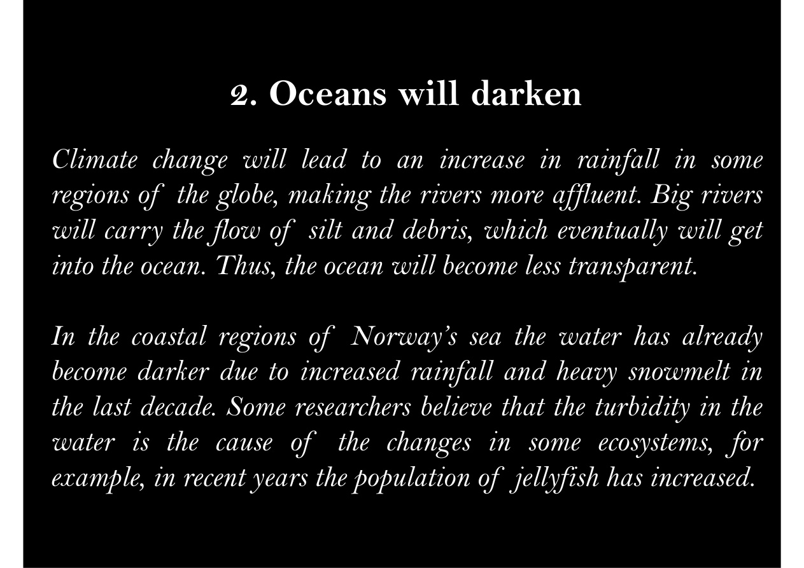
2. Oceans will darken
- •2. Oceans will darken Climate change will lead to an increase in rainfall in some regions of the globe, making the rivers more affluent. Big rivers will carry the flow of silt and debris, which eventually will get
This slide presents essential concepts in Lecture 08: 2. Oceans will darken. Specifically, it examines 2. Oceans will darken Climate change will lead to an increase in rainfall in some regions of the globe, making the rivers more affluent. Big rivers will carry the flow of silt and debris, which eventually will get. In the broader context of Unexpected climate changes and tipping points: Arctic sea ice melt, West Antarctic ice sheet disintegration, Amazon rainforest dieback, Nassim Taleb's Black Swan theory, Eric Drexler's molecular nanotechnology risks (Grey Goo), Bulletin of the Atomic Scientists Doomsday Clock (90 seconds to midnight), Global Terrestrial Stilling, Hypercanes (50 deg C ocean SST), ocean darkening, Chinchorro mummy decay, and athletic wet-bulb heat safety rules., mastering this material is critical for analyzing ecological tradeoffs, regulatory frameworks, and exam questions on environmental system dynamics.
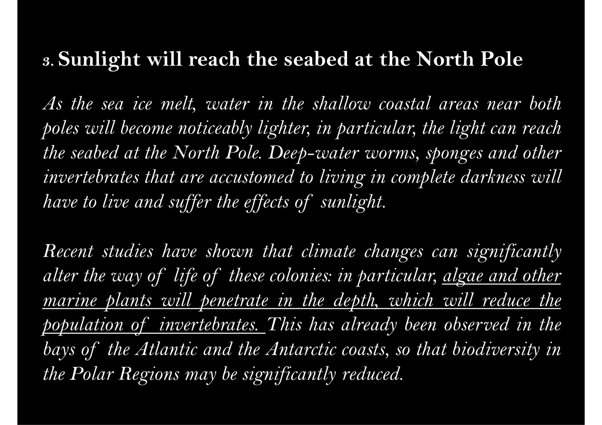
3. Sunlight will reach the seabed at the North Pole
- •3. Sunlight will reach the seabed at the North Pole As the sea ice melt, water in the shallow coastal areas near both poles will become noticeably lighter, in particular, the light can reach the seabed at the North Pole. Deep-water worms, sponges and other
This slide presents essential concepts in Lecture 08: 3. Sunlight will reach the seabed at the North Pole. Specifically, it examines 3. Sunlight will reach the seabed at the North Pole As the sea ice melt, water in the shallow coastal areas near both poles will become noticeably lighter, in particular, the light can reach the seabed at the North Pole. Deep-water worms, sponges and other. In the broader context of Unexpected climate changes and tipping points: Arctic sea ice melt, West Antarctic ice sheet disintegration, Amazon rainforest dieback, Nassim Taleb's Black Swan theory, Eric Drexler's molecular nanotechnology risks (Grey Goo), Bulletin of the Atomic Scientists Doomsday Clock (90 seconds to midnight), Global Terrestrial Stilling, Hypercanes (50 deg C ocean SST), ocean darkening, Chinchorro mummy decay, and athletic wet-bulb heat safety rules., mastering this material is critical for analyzing ecological tradeoffs, regulatory frameworks, and exam questions on environmental system dynamics.
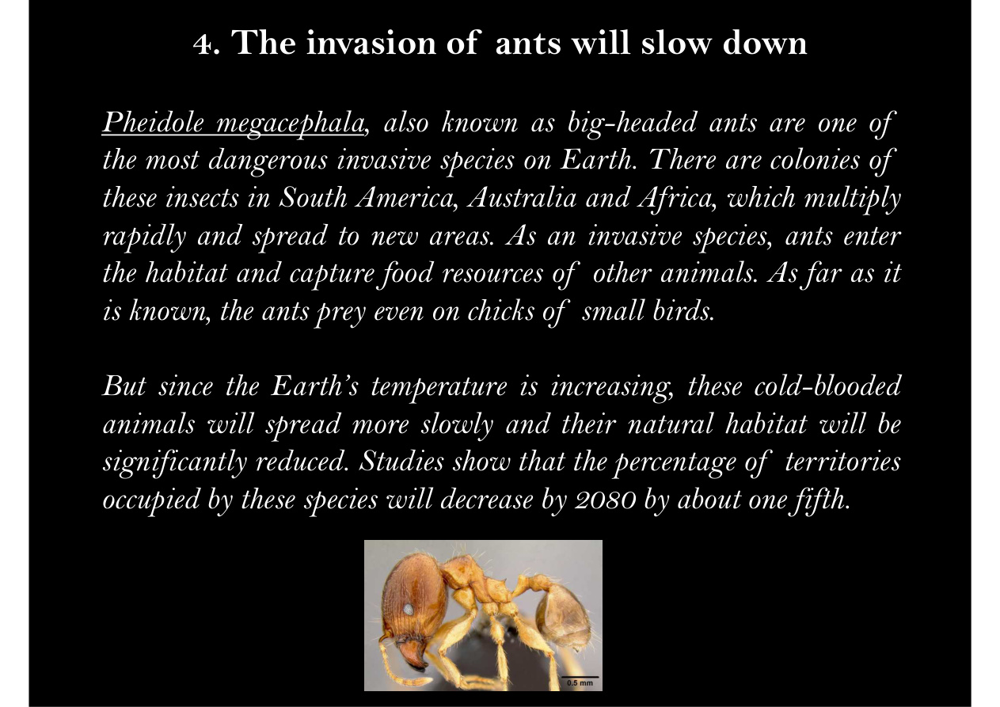
4. The invasion of ants will slow down
- •4. The invasion of ants will slow down Pheidole megacephala, also known as big-headed ants are one of the most dangerous invasive species on Earth. There are colonies of these insects in South America, Australia and Africa, which multiply
This slide presents essential concepts in Lecture 08: 4. The invasion of ants will slow down. Specifically, it examines 4. The invasion of ants will slow down Pheidole megacephala, also known as big-headed ants are one of the most dangerous invasive species on Earth. There are colonies of these insects in South America, Australia and Africa, which multiply. In the broader context of Unexpected climate changes and tipping points: Arctic sea ice melt, West Antarctic ice sheet disintegration, Amazon rainforest dieback, Nassim Taleb's Black Swan theory, Eric Drexler's molecular nanotechnology risks (Grey Goo), Bulletin of the Atomic Scientists Doomsday Clock (90 seconds to midnight), Global Terrestrial Stilling, Hypercanes (50 deg C ocean SST), ocean darkening, Chinchorro mummy decay, and athletic wet-bulb heat safety rules., mastering this material is critical for analyzing ecological tradeoffs, regulatory frameworks, and exam questions on environmental system dynamics.
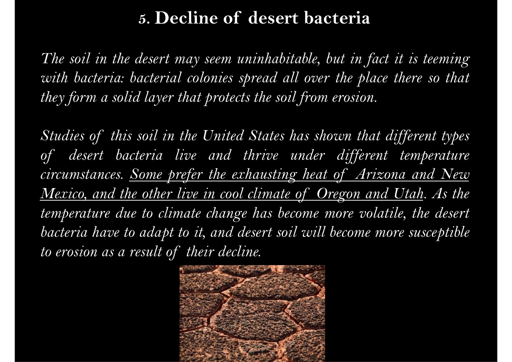
5. Decline of desert bacteria
- •5. Decline of desert bacteria The soil in the desert may seem uninhabitable, but in fact it is teeming with bacteria: bacterial colonies spread all over the place there so that they form a solid layer that protects the soil from erosion.
This slide presents essential concepts in Lecture 08: 5. Decline of desert bacteria. Specifically, it examines 5. Decline of desert bacteria The soil in the desert may seem uninhabitable, but in fact it is teeming with bacteria: bacterial colonies spread all over the place there so that they form a solid layer that protects the soil from erosion.. In the broader context of Unexpected climate changes and tipping points: Arctic sea ice melt, West Antarctic ice sheet disintegration, Amazon rainforest dieback, Nassim Taleb's Black Swan theory, Eric Drexler's molecular nanotechnology risks (Grey Goo), Bulletin of the Atomic Scientists Doomsday Clock (90 seconds to midnight), Global Terrestrial Stilling, Hypercanes (50 deg C ocean SST), ocean darkening, Chinchorro mummy decay, and athletic wet-bulb heat safety rules., mastering this material is critical for analyzing ecological tradeoffs, regulatory frameworks, and exam questions on environmental system dynamics.
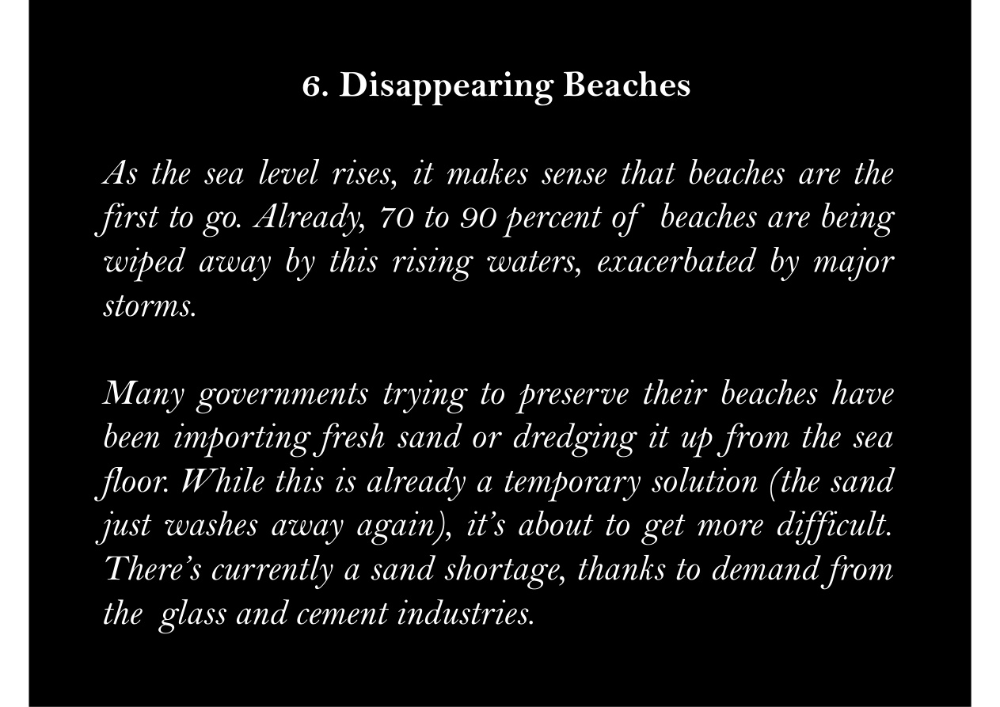
6. Disappearing Beaches
- •6. Disappearing Beaches As the sea level rises, it makes sense that beaches are the first to go. Already, 70 to 90 percent of beaches are being wiped away by this rising waters, exacerbated by major
This slide presents essential concepts in Lecture 08: 6. Disappearing Beaches. Specifically, it examines 6. Disappearing Beaches As the sea level rises, it makes sense that beaches are the first to go. Already, 70 to 90 percent of beaches are being wiped away by this rising waters, exacerbated by major. In the broader context of Unexpected climate changes and tipping points: Arctic sea ice melt, West Antarctic ice sheet disintegration, Amazon rainforest dieback, Nassim Taleb's Black Swan theory, Eric Drexler's molecular nanotechnology risks (Grey Goo), Bulletin of the Atomic Scientists Doomsday Clock (90 seconds to midnight), Global Terrestrial Stilling, Hypercanes (50 deg C ocean SST), ocean darkening, Chinchorro mummy decay, and athletic wet-bulb heat safety rules., mastering this material is critical for analyzing ecological tradeoffs, regulatory frameworks, and exam questions on environmental system dynamics.
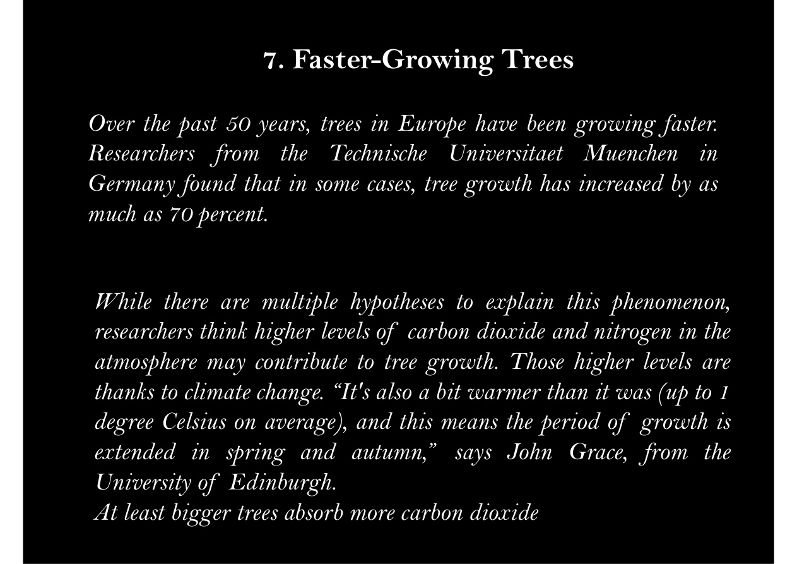
7. Faster-Growing Trees
- •7. Faster-Growing Trees Over the past 50 years, trees in Europe have been growing faster. Researchers from
This slide presents essential concepts in Lecture 08: 7. Faster-Growing Trees. Specifically, it examines 7. Faster-Growing Trees Over the past 50 years, trees in Europe have been growing faster. Researchers from. In the broader context of Unexpected climate changes and tipping points: Arctic sea ice melt, West Antarctic ice sheet disintegration, Amazon rainforest dieback, Nassim Taleb's Black Swan theory, Eric Drexler's molecular nanotechnology risks (Grey Goo), Bulletin of the Atomic Scientists Doomsday Clock (90 seconds to midnight), Global Terrestrial Stilling, Hypercanes (50 deg C ocean SST), ocean darkening, Chinchorro mummy decay, and athletic wet-bulb heat safety rules., mastering this material is critical for analyzing ecological tradeoffs, regulatory frameworks, and exam questions on environmental system dynamics.
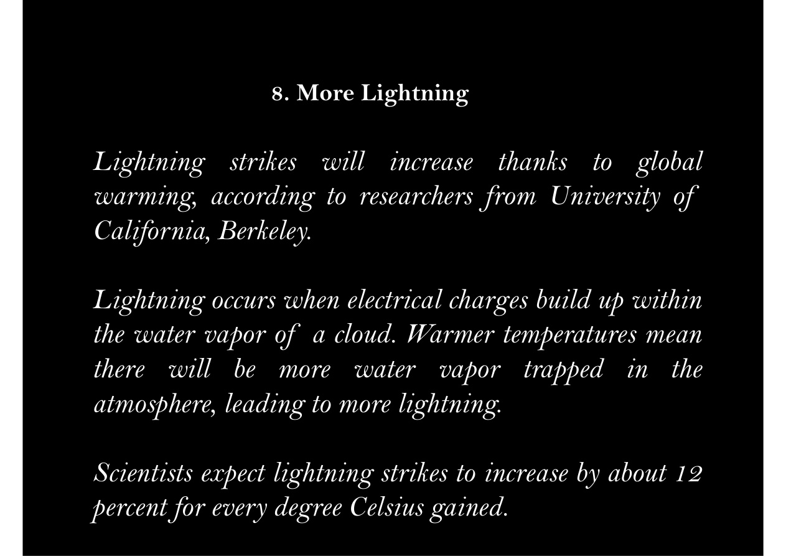
8. More Lightning
- •8. More Lightning Lightning strikes will
This slide presents essential concepts in Lecture 08: 8. More Lightning. Specifically, it examines 8. More Lightning Lightning strikes will. In the broader context of Unexpected climate changes and tipping points: Arctic sea ice melt, West Antarctic ice sheet disintegration, Amazon rainforest dieback, Nassim Taleb's Black Swan theory, Eric Drexler's molecular nanotechnology risks (Grey Goo), Bulletin of the Atomic Scientists Doomsday Clock (90 seconds to midnight), Global Terrestrial Stilling, Hypercanes (50 deg C ocean SST), ocean darkening, Chinchorro mummy decay, and athletic wet-bulb heat safety rules., mastering this material is critical for analyzing ecological tradeoffs, regulatory frameworks, and exam questions on environmental system dynamics.
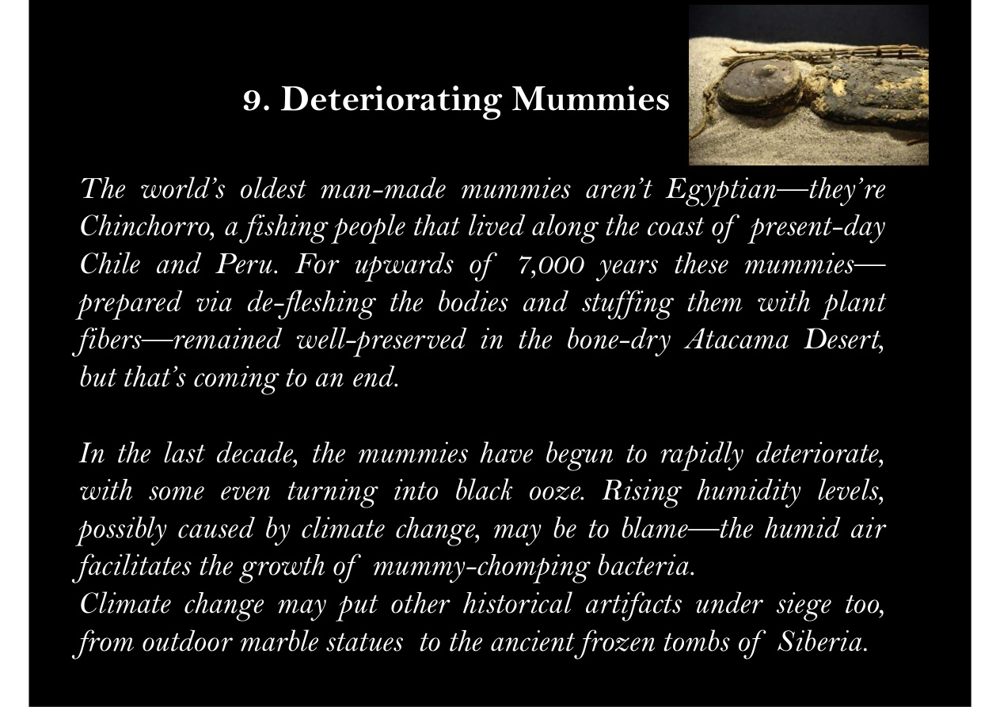
9. Deteriorating Mummies
- •9. Deteriorating Mummies The world’s oldest man-made mummies aren’t Egyptian—they’re Chinchorro, a fishing people that lived along the coast of present-day Chile and Peru. For upwards of
This slide presents essential concepts in Lecture 08: 9. Deteriorating Mummies. Specifically, it examines 9. Deteriorating Mummies The world’s oldest man-made mummies aren’t Egyptian—they’re Chinchorro, a fishing people that lived along the coast of present-day Chile and Peru. For upwards of. In the broader context of Unexpected climate changes and tipping points: Arctic sea ice melt, West Antarctic ice sheet disintegration, Amazon rainforest dieback, Nassim Taleb's Black Swan theory, Eric Drexler's molecular nanotechnology risks (Grey Goo), Bulletin of the Atomic Scientists Doomsday Clock (90 seconds to midnight), Global Terrestrial Stilling, Hypercanes (50 deg C ocean SST), ocean darkening, Chinchorro mummy decay, and athletic wet-bulb heat safety rules., mastering this material is critical for analyzing ecological tradeoffs, regulatory frameworks, and exam questions on environmental system dynamics.
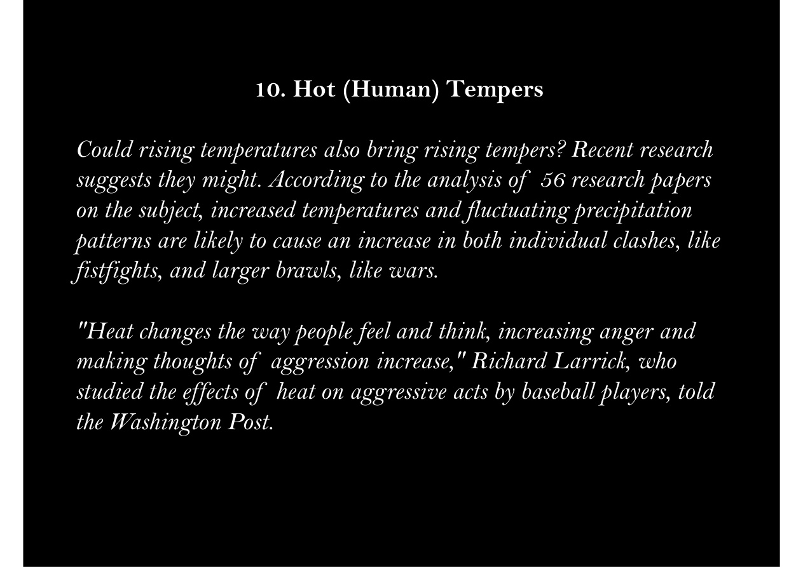
10. Hot (Human) Tempers
- •10. Hot (Human) Tempers Could rising temperatures also bring rising tempers? Recent research suggests they might. According to the analysis of 56 research papers on the subject, increased temperatures and fluctuating precipitation
This slide presents essential concepts in Lecture 08: 10. Hot (Human) Tempers. Specifically, it examines 10. Hot (Human) Tempers Could rising temperatures also bring rising tempers? Recent research suggests they might. According to the analysis of 56 research papers on the subject, increased temperatures and fluctuating precipitation. In the broader context of Unexpected climate changes and tipping points: Arctic sea ice melt, West Antarctic ice sheet disintegration, Amazon rainforest dieback, Nassim Taleb's Black Swan theory, Eric Drexler's molecular nanotechnology risks (Grey Goo), Bulletin of the Atomic Scientists Doomsday Clock (90 seconds to midnight), Global Terrestrial Stilling, Hypercanes (50 deg C ocean SST), ocean darkening, Chinchorro mummy decay, and athletic wet-bulb heat safety rules., mastering this material is critical for analyzing ecological tradeoffs, regulatory frameworks, and exam questions on environmental system dynamics.
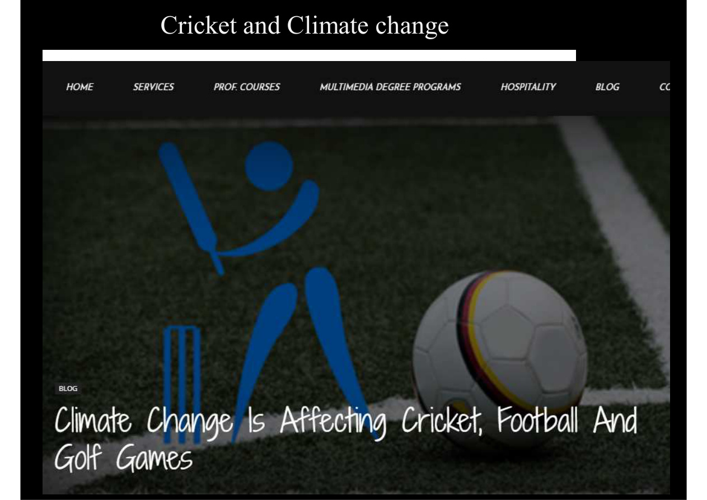
Cricket and Climate change
- •Cricket and Climate change
This slide presents essential concepts in Lecture 08: Cricket and Climate change. Specifically, it examines Cricket and Climate change. In the broader context of Unexpected climate changes and tipping points: Arctic sea ice melt, West Antarctic ice sheet disintegration, Amazon rainforest dieback, Nassim Taleb's Black Swan theory, Eric Drexler's molecular nanotechnology risks (Grey Goo), Bulletin of the Atomic Scientists Doomsday Clock (90 seconds to midnight), Global Terrestrial Stilling, Hypercanes (50 deg C ocean SST), ocean darkening, Chinchorro mummy decay, and athletic wet-bulb heat safety rules., mastering this material is critical for analyzing ecological tradeoffs, regulatory frameworks, and exam questions on environmental system dynamics.
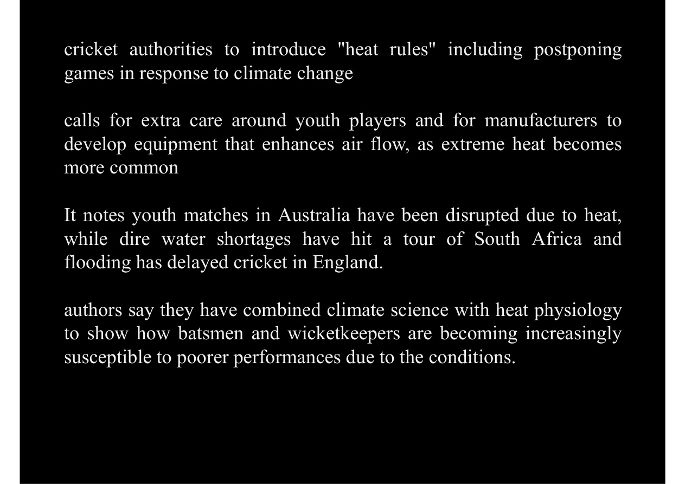
cricket authorities to introduce "heat rules" including postpo...
- •cricket authorities to introduce "heat rules" including postponing games in response to climate change calls for extra care around youth players and for manufacturers to develop equipment that enhances air flow, as extreme heat becomes
This slide presents essential concepts in Lecture 08: cricket authorities to introduce "heat rules" including postpo.... Specifically, it examines cricket authorities to introduce "heat rules" including postponing games in response to climate change calls for extra care around youth players and for manufacturers to develop equipment that enhances air flow, as extreme heat becomes. In the broader context of Unexpected climate changes and tipping points: Arctic sea ice melt, West Antarctic ice sheet disintegration, Amazon rainforest dieback, Nassim Taleb's Black Swan theory, Eric Drexler's molecular nanotechnology risks (Grey Goo), Bulletin of the Atomic Scientists Doomsday Clock (90 seconds to midnight), Global Terrestrial Stilling, Hypercanes (50 deg C ocean SST), ocean darkening, Chinchorro mummy decay, and athletic wet-bulb heat safety rules., mastering this material is critical for analyzing ecological tradeoffs, regulatory frameworks, and exam questions on environmental system dynamics.
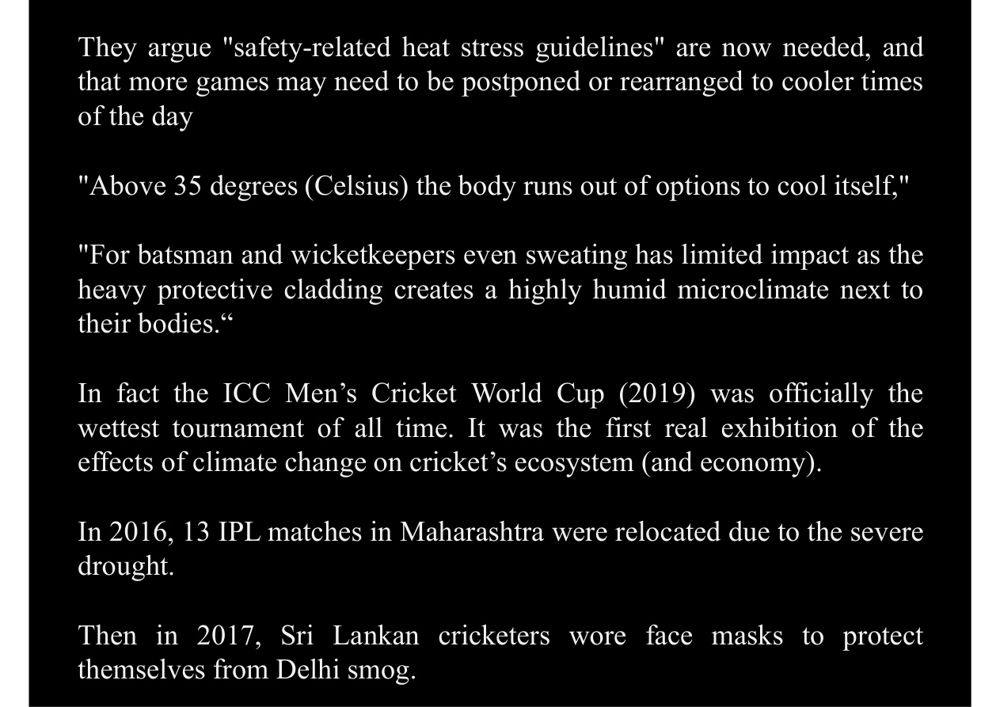
They argue "safety-related heat stress guidelines" are now nee...
- •They argue "safety-related heat stress guidelines" are now needed, and that more games may need to be postponed or rearranged to cooler times of the day "Above 35 degrees (Celsius) the body runs out of options to cool itself,"
This slide presents essential concepts in Lecture 08: They argue "safety-related heat stress guidelines" are now nee.... Specifically, it examines They argue "safety-related heat stress guidelines" are now needed, and that more games may need to be postponed or rearranged to cooler times of the day "Above 35 degrees (Celsius) the body runs out of options to cool itself,". In the broader context of Unexpected climate changes and tipping points: Arctic sea ice melt, West Antarctic ice sheet disintegration, Amazon rainforest dieback, Nassim Taleb's Black Swan theory, Eric Drexler's molecular nanotechnology risks (Grey Goo), Bulletin of the Atomic Scientists Doomsday Clock (90 seconds to midnight), Global Terrestrial Stilling, Hypercanes (50 deg C ocean SST), ocean darkening, Chinchorro mummy decay, and athletic wet-bulb heat safety rules., mastering this material is critical for analyzing ecological tradeoffs, regulatory frameworks, and exam questions on environmental system dynamics.
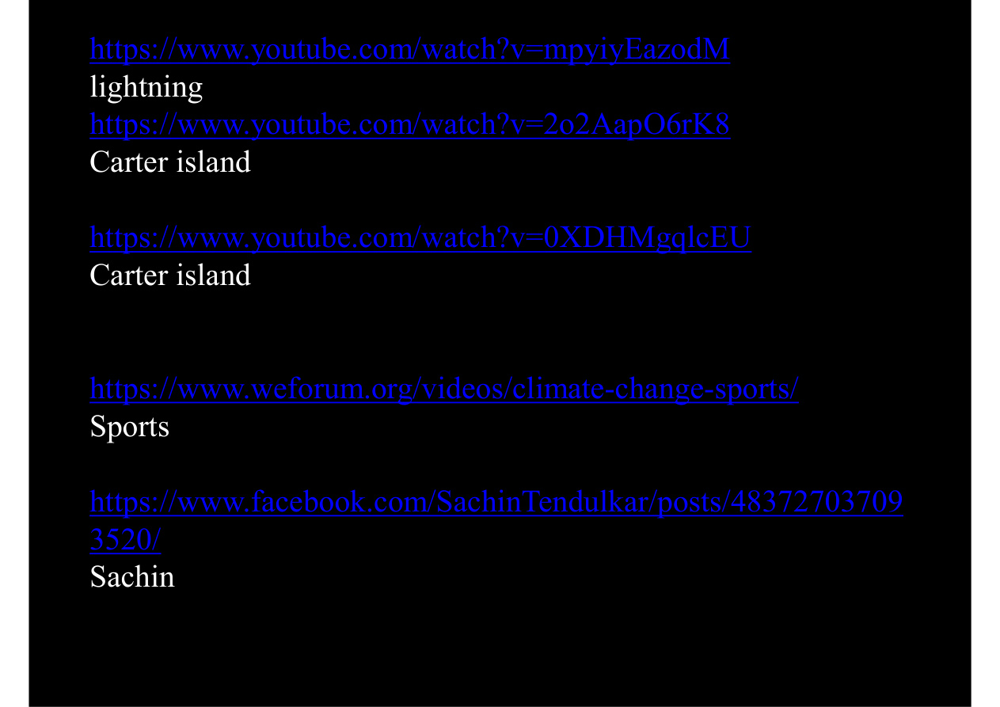
https://www.youtube.com/watch?v=mpyiyEazodM
Visual figure / diagram presentation slide. Review the high-resolution render on the left.
This slide presents essential concepts in Lecture 08: https://www.youtube.com/watch?v=mpyiyEazodM. Specifically, it examines https://www.youtube.com/watch?v=mpyiyEazodM lightning https://www.youtube.com/watch?v=2o2AapO6rK8 Carter island. In the broader context of Unexpected climate changes and tipping points: Arctic sea ice melt, West Antarctic ice sheet disintegration, Amazon rainforest dieback, Nassim Taleb's Black Swan theory, Eric Drexler's molecular nanotechnology risks (Grey Goo), Bulletin of the Atomic Scientists Doomsday Clock (90 seconds to midnight), Global Terrestrial Stilling, Hypercanes (50 deg C ocean SST), ocean darkening, Chinchorro mummy decay, and athletic wet-bulb heat safety rules., mastering this material is critical for analyzing ecological tradeoffs, regulatory frameworks, and exam questions on environmental system dynamics.
⚡ AMOC & Climate Tipping Element Hysteresis Explorer
Simulate Stommel's two-box model of thermohaline circulation and discover saddle-node bifurcation tipping points.
Active Recall Flashcards
Test yourself on essential slide definitions, reactions, and principles before flipping.
Exam Traps, Fallacies & Professor Emphasis Points
Common student misconceptions and subtle distinctions tested in Midsem and Endsem exams.
- ⚠️ Trap: Assuming an AMOC collapse means the entire Earth cools. AMOC collapse causes profound regional cooling in Northern Europe and the North Atlantic, but leads to exacerbated heating in the Southern Hemisphere and tropical oceans.
- ⚠️ Exam Trap: Believing all tipping points happen instantaneously. While the 'tipping decision' can occur in years, the resulting transition (e.g. melting of Greenland or West Antarctica) can unfold over decades to centuries.
Concept Check Quiz
Instant feedback on core conceptual and quantitative questions from the lecture slides.
Complete Slide Deck Quick-Jump Gallery
Quick visual reference of all 30 slides across this lecture deck with PDF downloads.